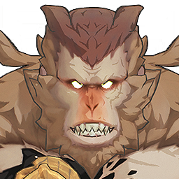

Hooscamp Clapperclaw

Element: Aero
The faithful followers of Fractsidus.
For those who lack the talent of resonance but crave for power, Fractsidus has crossed the forbidden line of science, coupling human beings with the limbs of Tacet Discord through special mechanical parts, enabling the followers to wield the massive hammer.
The frequency of Tacet Discord is increasingly distorting the followers' minds, eroding their bodies. They choose to wear masks to hide their hideous faces.